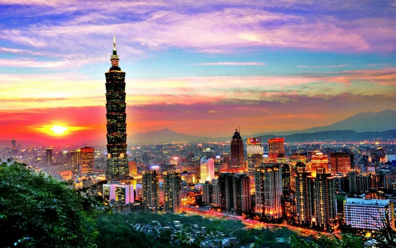
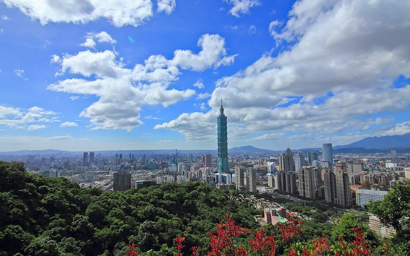
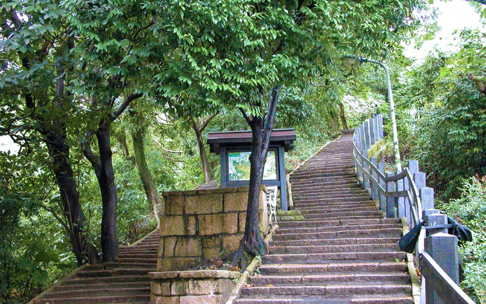
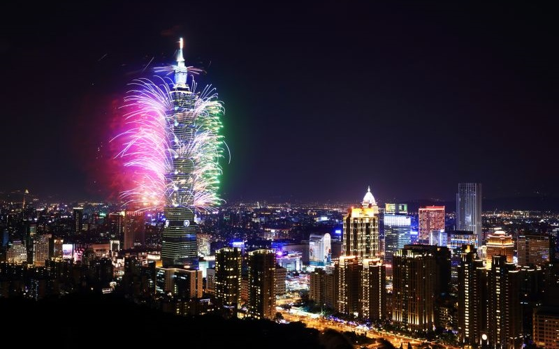

Xiangshan
Taipei City
Cityscape of Taipei can be viewed from Xiangshan
  xiangshan, also known as the elephant mountain, is a mountain in Xingyi District. It is named because its elephant-like
shape. Although the altitude is not high, Xiangshan is a major tourist attraction for Taipei citizens because it locates
near the center of Taipei City. It is a good place for viewing the whole cityscape of Taipei City, especially at night, when
the buildings lit up. During the New Year's Eve, Xiangshan is filled with people to see the fireworks displayed at Taipei 101.
Besides, the 1.5km-long Xiangshan Hiking Trail makes it popular for hiking.
- Best seasons: all year around
- Transportation:
MRT Xiangshan Station.